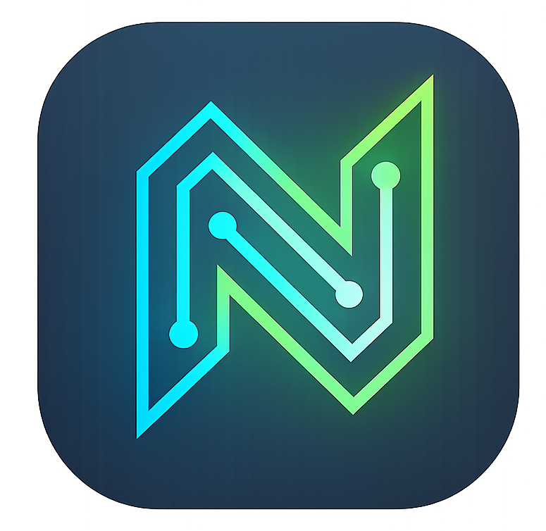

<!doctype html>
<html lang="en" class="dark">
<head>
  <meta charset="UTF-8" />
  <meta name="viewport" content="width=device-width, initial-scale=1.0" />
  <title>Noyce IDE - Build it right.</title>
  <script src="https://cdn.tailwindcss.com"></script>
  <script>
    tailwind.config = {
      darkMode: 'class',
      theme: {
        extend: {
          fontFamily: {
            serif: ['"Instrument Serif"', 'serif'],
            sans: ['-apple-system', 'BlinkMacSystemFont', 'system-ui', 'sans-serif'],
          }
        }
      }
    }
  </script>
  <style type="text/tailwindcss">
    @import url('https://fonts.googleapis.com/css2?family=Instrument+Serif:ital@0;1&display=swap');
    
    @layer utilities {
      .liquid-glass {
        background: rgba(255, 255, 255, 0.01);
        background-blend-mode: luminosity;
        backdrop-filter: blur(4px);
        -webkit-backdrop-filter: blur(4px);
        box-shadow: inset 0 1px 1px rgba(255, 255, 255, 0.1);
        position: relative;
        overflow: hidden;
      }
      
      .liquid-glass::before {
        content: '';
        position: absolute;
        inset: 0;
        border-radius: inherit;
        padding: 1.4px;
        background: linear-gradient(180deg, rgba(255,255,255,0.45) 0%, rgba(255,255,255,0.15) 20%, rgba(255,255,255,0) 40%, rgba(255,255,255,0) 60%, rgba(255,255,255,0.15) 80%, rgba(255,255,255,0.45) 100%);
        -webkit-mask: linear-gradient(#fff 0 0) content-box, linear-gradient(#fff 0 0);
        -webkit-mask-composite: xor;
        mask-composite: exclude;
        pointer-events: none;
      }
    }

    body {
      background-color: #000;
      color: #fff;
    }
  </style>
  <script src="https://unpkg.com/react@18.3.1/umd/react.development.js" crossorigin></script>
  <script src="https://unpkg.com/react-dom@18.3.1/umd/react-dom.development.js" crossorigin></script>
  <script src="https://unpkg.com/@babel/standalone@7.29.0/babel.min.js" crossorigin></script>
  <script src="https://unpkg.com/lucide@latest"></script>
  <script src="https://unpkg.com/framer-motion@11.11.13/dist/framer-motion.js"></script>
</head>
<body>
  <div id="root"></div>
  <script type="text/babel">
    const { useState, useEffect, useRef } = React;
    const { motion } = window.Motion;

    // Component: Custom Fading Background Video
    function BackgroundVideo({ src, translateY = "-17%" }) {
      const videoRef = useRef(null);
      const fadingOutRef = useRef(false);
      const animationFrameRef = useRef(null);

      useEffect(() => {
        const video = videoRef.current;
        if (!video) return;

        const setOpacity = (val) => {
          video.style.opacity = val;
        };

        const fade = (startOpacity, endOpacity, duration, onComplete) => {
          if (animationFrameRef.current) cancelAnimationFrame(animationFrameRef.current);
          const startTime = performance.now();
          const tick = (now) => {
            const elapsed = now - startTime;
            const progress = Math.min(elapsed / duration, 1);
            const currentOpacity = startOpacity + (endOpacity - startOpacity) * progress;
            setOpacity(currentOpacity);
            if (progress < 1) {
              animationFrameRef.current = requestAnimationFrame(tick);
            } else if (onComplete) {
              onComplete();
            }
          };
          animationFrameRef.current = requestAnimationFrame(tick);
        };

        const handleLoadStart = () => {
          setOpacity(0);
        };

        const handlePlaying = () => {
          fadingOutRef.current = false;
          const currentOpacity = parseFloat(video.style.opacity || 0);
          fade(currentOpacity, 1, 500);
        };

        const handleTimeUpdate = () => {
          if (video.duration - video.currentTime <= 0.55 && !fadingOutRef.current) {
            fadingOutRef.current = true;
            const currentOpacity = parseFloat(video.style.opacity || 1);
            fade(currentOpacity, 0, 500);
          }
        };

        const handleEnded = () => {
          setOpacity(0);
          setTimeout(() => {
            video.currentTime = 0;
            video.play();
          }, 100);
        };

        video.addEventListener('loadstart', handleLoadStart);
        video.addEventListener('playing', handlePlaying);
        video.addEventListener('timeupdate', handleTimeUpdate);
        video.addEventListener('ended', handleEnded);

        return () => {
          video.removeEventListener('loadstart', handleLoadStart);
          video.removeEventListener('playing', handlePlaying);
          video.removeEventListener('timeupdate', handleTimeUpdate);
          video.removeEventListener('ended', handleEnded);
          if (animationFrameRef.current) cancelAnimationFrame(animationFrameRef.current);
        };
      }, [src]);

      return (
        <div className="absolute inset-0 z-0 overflow-hidden bg-black pointer-events-none">
          <video
            ref={videoRef}
            src={src}
            autoPlay
            muted
            playsInline
            className="absolute min-w-full min-h-full object-cover"
            style={{ transform: `translateY(${translateY})`, opacity: 0 }}
          />
          <div className="absolute inset-0 bg-gradient-to-b from-black/60 via-black/20 to-black/90"></div>
        </div>
      );
    }

    function NavBar() {
      return (
        <nav className="relative z-20 px-6 py-6 w-full">
          <div className="liquid-glass rounded-full px-6 py-3 flex items-center justify-between max-w-5xl mx-auto">
            <div className="flex items-center gap-3">
              
            </div>
            <div className="hidden md:flex items-center gap-8">
              <a href="#features" className="text-white/80 hover:text-white transition-colors text-sm font-medium">Features</a>
              <a href="#philosophy" className="text-white/80 hover:text-white transition-colors text-sm font-medium">Philosophy</a>
              <a href="#download" className="text-white/80 hover:text-white transition-colors text-sm font-medium">Download</a>
            </div>
            <div className="flex items-center gap-4">
              <a href="https://github.com/Hitheshkaranth/noyce-ide-dist" target="_blank" rel="noopener noreferrer" className="liquid-glass rounded-full px-6 py-2 text-white text-sm font-medium hover:bg-white/5 transition-colors">
                View on GitHub
              </a>
            </div>
          </div>
        </nav>
      );
    }

    function HeroSection() {
      return (
        <section className="relative min-h-screen flex flex-col overflow-hidden">
          <BackgroundVideo src="assets/hero.mp4" translateY="-17%" />
          <NavBar />
          
          <div className="relative z-10 flex-1 flex flex-col items-center justify-center px-6 py-12 text-center -translate-y-10">
            <motion.h1 
              initial={{ opacity: 0, y: 20 }}
              animate={{ opacity: 1, y: 0 }}
              transition={{ duration: 0.8, ease: "easeOut" }}
              className="text-5xl md:text-7xl lg:text-8xl text-white mb-6 tracking-tight font-serif whitespace-nowrap"
            >
              Build it right.
            </motion.h1>
            
            <motion.div 
              initial={{ opacity: 0 }}
              animate={{ opacity: 1 }}
              transition={{ delay: 0.3, duration: 0.8 }}
              className="max-w-xl w-full space-y-8"
            >
              <p className="text-white/80 text-lg md:text-xl leading-relaxed font-sans">
                A lightweight, highly extensible development environment crafted for focus and speed.
              </p>
              
              <div className="flex flex-col sm:flex-row items-center justify-center gap-4">
                <a href="#download" className="liquid-glass rounded-full px-8 py-4 text-white text-sm md:text-base font-medium hover:bg-white/10 transition-colors inline-flex items-center gap-2">
                  <i data-lucide="download" className="w-5 h-5"></i>
                  Download for Mac
                </a>
                <a href="#features" className="text-white/70 hover:text-white px-8 py-4 text-sm md:text-base transition-colors">
                  Explore Features
                </a>
              </div>
            </motion.div>
          </div>
        </section>
      );
    }

    function FeatureShowcase({ title, description, videoSrc, reverse = false }) {
      return (
        <section className="relative py-32 px-6 overflow-hidden bg-black">
          <div className={`max-w-7xl mx-auto flex flex-col ${reverse ? 'lg:flex-row-reverse' : 'lg:flex-row'} items-center gap-16`}>
            <div className="flex-1 space-y-6 z-10 relative">
              <h2 className="text-4xl md:text-6xl text-white font-serif tracking-tight">{title}</h2>
              <p className="text-white/70 text-lg leading-relaxed max-w-lg font-sans">
                {description}
              </p>
            </div>
            
            <div className="flex-1 w-full relative group">
              <div className="liquid-glass rounded-2xl overflow-hidden aspect-video relative p-2 shadow-2xl">
                 <video
                    src={videoSrc}
                    autoPlay
                    muted
                    loop
                    playsInline
                    className="w-full h-full object-cover rounded-xl"
                  />
              </div>
              <div className="absolute -inset-10 bg-white/5 blur-3xl rounded-full opacity-0 group-hover:opacity-100 transition-opacity duration-700 pointer-events-none"></div>
            </div>
          </div>
        </section>
      );
    }

    function DownloadSection() {
      return (
        <section id="download" className="relative py-40 px-6 overflow-hidden bg-black flex items-center justify-center text-center">
          <div className="absolute inset-0 bg-[radial-gradient(ellipse_at_center,rgba(255,255,255,0.05)_0%,rgba(0,0,0,1)_70%)] pointer-events-none"></div>
          
          <div className="relative z-10 flex flex-col items-center max-w-2xl mx-auto space-y-8">
            
            <h2 className="text-5xl md:text-7xl text-white font-serif tracking-tight">Ready to build?</h2>
            <p className="text-white/70 text-lg md:text-xl font-sans">
              Join the developers who prioritize focus, speed, and craft.
            </p>
            <div className="pt-8">
               <a href="https://github.com/Hitheshkaranth/noyce-ide-dist" className="bg-white text-black hover:bg-white/90 rounded-full px-10 py-4 font-medium transition-colors inline-flex items-center gap-2">
                  <i data-lucide="github" className="w-5 h-5"></i>
                  Download latest release
                </a>
            </div>
          </div>
        </section>
      );
    }

    function Footer() {
      return (
        <footer className="border-t border-white/10 bg-black py-12 px-6 relative z-10">
          <div className="max-w-7xl mx-auto flex flex-col md:flex-row items-center justify-between gap-6">
            <div className="flex items-center gap-3 opacity-60 hover:opacity-100 transition-opacity">
               
            </div>
            <div className="text-white/40 text-sm font-sans flex items-center gap-6">
              <a href="#" className="hover:text-white transition-colors">Documentation</a>
              <a href="#" className="hover:text-white transition-colors">Changelog</a>
              <span>&copy; {new Date().getFullYear()} Noyce IDE.</span>
            </div>
          </div>
        </footer>
      );
    }

    function App() {
      React.useEffect(() => {
        lucide.createIcons();
      }, []);

      return (
        <div className="bg-black min-h-screen text-white font-sans antialiased selection:bg-white/30 selection:text-white">
          <HeroSection />
          
          <div id="features">
            <FeatureShowcase 
              title="A philosophy of focus" 
              description="Noyce is stripped of the bloat. Every pixel serves a purpose, keeping you in the flow state longer without distractions."
              videoSrc="assets/philosophy.mp4"
            />
            
            <FeatureShowcase 
              title="Strategic workflow" 
              description="Built for developers who know their tools. Keyboard-centric, fast indexing, and intuitive commands."
              videoSrc="assets/strategy.mp4"
              reverse={true}
            />
            
            <FeatureShowcase 
              title="The craft of code" 
              description="Syntax highlighting that understands context, not just keywords. A visual rhythm that makes reading code a pleasure."
              videoSrc="assets/craft.mp4"
            />
            
            <FeatureShowcase 
              title="Featured extensions" 
              description="Extensible by design, not by accident. Tap into a curated ecosystem of plugins that integrate seamlessly with the core UI."
              videoSrc="assets/featured.mp4"
              reverse={true}
            />
          </div>

          <DownloadSection />
          <Footer />
        </div>
      );
    }

    const root = ReactDOM.createRoot(document.getElementById('root'));
    root.render(<App />);
  </script>
</body>
</html>
